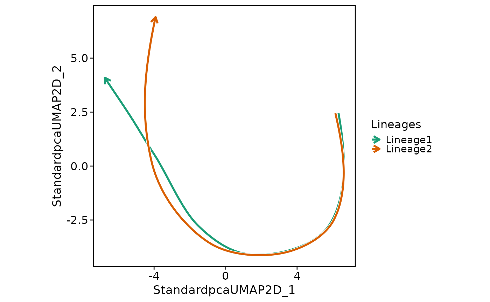
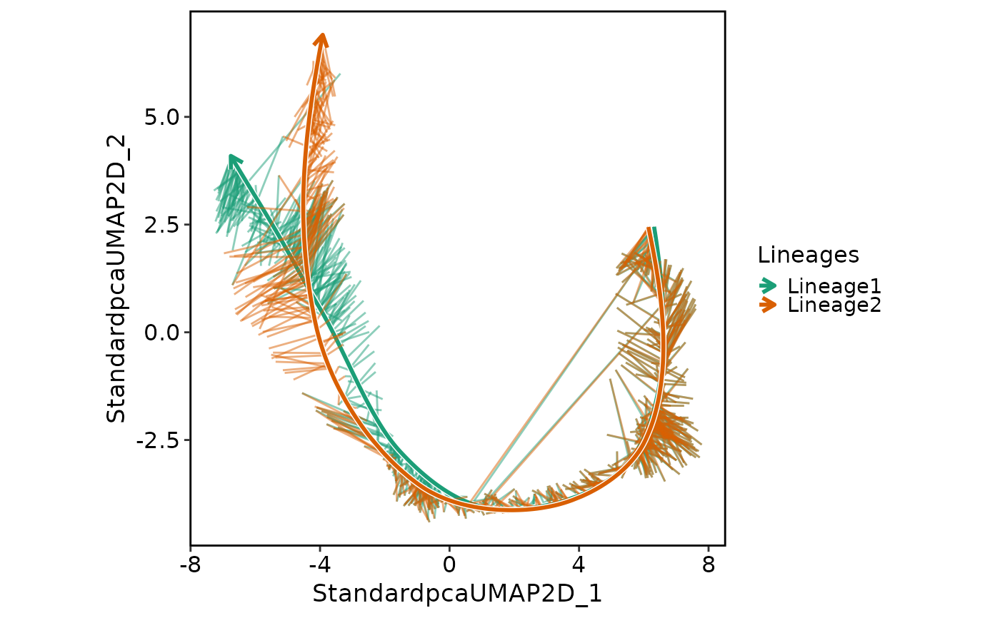

Generate a lineage plot based on the pseudotime.
Usage
LineagePlot(
srt,
lineages,
reduction = NULL,
dims = c(1, 2),
cells = NULL,
trim = c(0.01, 0.99),
span = 0.75,
palette = "Dark2",
palcolor = NULL,
lineages_arrow = grid::arrow(length = grid::unit(0.1, "inches")),
linewidth = 1,
line_bg = "white",
line_bg_stroke = 0.5,
whiskers = FALSE,
whiskers_linewidth = 0.5,
whiskers_alpha = 0.5,
aspect.ratio = 1,
title = NULL,
subtitle = NULL,
xlab = NULL,
ylab = NULL,
legend.position = "right",
legend.direction = "vertical",
theme_use = "theme_scop",
theme_args = list(),
return_layer = FALSE,
seed = 11
)Arguments
- srt
A Seurat object.
- lineages
A character vector that specifies the lineages to be included. Typically, use the pseudotime of cells.
- reduction
Which dimensionality reduction to use. If not specified, will use the reduction returned by DefaultReduction.
- dims
Dimensions to plot, must be a two-length numeric vector specifying x- and y-dimensions
- cells
A character vector of cell names to use.
- trim
A numeric vector of length 2 specifying the quantile range of lineages to include in the plot.
- span
The span of the loess smoother.
- palette
Color palette name. Available palettes can be found in thisplot::show_palettes. Default is
"Dark2".- palcolor
Custom colors used to create a color palette. Default is
NULL.- lineages_arrow
An arrow object specifying the arrow for lineages.
- linewidth
The linewidth for the lineages.
- line_bg
A character string specifying the color for the background lines.
- line_bg_stroke
The stroke width for the background lines.
- whiskers
Whether to include whiskers in the plot.
- whiskers_linewidth
The linewidth for the whiskers.
- whiskers_alpha
The transparency for the whiskers.
- aspect.ratio
Aspect ratio of the panel. Default is
1.- title
The text for the title. Default is
NULL.- subtitle
The text for the subtitle for the plot which will be displayed below the title. Default is
NULL.- xlab
The x-axis label of the plot. Default is
NULL.- ylab
The y-axis label of the plot. Default is
NULL.- legend.position
The position of legends, one of
"none","left","right","bottom","top". Default is"right".- legend.direction
The direction of the legend in the plot. Can be one of
"vertical"or"horizontal".- theme_use
Theme used. Can be a character string or a theme function. Default is
"theme_scop".- theme_args
Other arguments passed to the
theme_use. Default islist().- return_layer
Whether to return the plot layers as a list. Defaults is
FALSE.- seed
Random seed for reproducibility. Default is
11.
Examples
data(pancreas_sub)
pancreas_sub <- standard_scop(pancreas_sub)
#> ℹ [2026-01-29 13:01:50] Start standard scop workflow...
#> ℹ [2026-01-29 13:01:51] Checking a list of <Seurat>...
#> ! [2026-01-29 13:01:51] Data 1/1 of the `srt_list` is "unknown"
#> ℹ [2026-01-29 13:01:51] Perform `NormalizeData()` with `normalization.method = 'LogNormalize'` on the data 1/1 of the `srt_list`...
#> ℹ [2026-01-29 13:01:53] Perform `Seurat::FindVariableFeatures()` on the data 1/1 of the `srt_list`...
#> ℹ [2026-01-29 13:01:53] Use the separate HVF from srt_list
#> ℹ [2026-01-29 13:01:53] Number of available HVF: 2000
#> ℹ [2026-01-29 13:01:53] Finished check
#> ℹ [2026-01-29 13:01:54] Perform `Seurat::ScaleData()`
#> ℹ [2026-01-29 13:01:54] Perform pca linear dimension reduction
#> ℹ [2026-01-29 13:01:55] Perform `Seurat::FindClusters()` with `cluster_algorithm = 'louvain'` and `cluster_resolution = 0.6`
#> ℹ [2026-01-29 13:01:55] Reorder clusters...
#> ℹ [2026-01-29 13:01:55] Perform umap nonlinear dimension reduction
#> ℹ [2026-01-29 13:01:55] Non-linear dimensionality reduction (umap) using (Standardpca) dims (1-50) as input
#> ℹ [2026-01-29 13:01:58] Non-linear dimensionality reduction (umap) using (Standardpca) dims (1-50) as input
#> ✔ [2026-01-29 13:02:02] Run scop standard workflow completed
pancreas_sub <- RunSlingshot(
pancreas_sub,
group.by = "SubCellType",
reduction = "UMAP",
show_plot = FALSE
)
LineagePlot(
pancreas_sub,
lineages = paste0("Lineage", 1:2)
)

LineagePlot(
pancreas_sub,
lineages = paste0("Lineage", 1:2),
whiskers = TRUE
)
